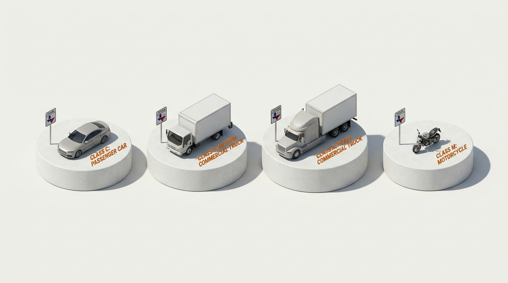

Statutory Authority: Texas Transportation Code § 545.401 (Reckless Driving & Due Care Standard) & Texas Common Law Doctrine of Due Care.
Responsibilities of a Defensive Driver
Defensive driving is the deliberate art of anticipating road hazards, conceding kinetic precedence, and operating with continuous vigilance to prevent collisions regardless of the mistakes of others.
Core Doctrine // Texas Common Law Rule
TTC § 545.401
“A defensive driver takes proactive measures to avoid crashes. Texas law requires drivers to protect each other from their own mistakes.”
verifiedTexas Universal Due Care Principle
"The existence of traffic signals or right-of-way rules does not relieve any operator of the fundamental statutory duty to exercise due care to prevent injury to persons or property."

POS: 30.2672° N, 97.7431° W // ARTERIAL CORRIDOR
TXDOT SPEC // § 545 DEFENSIVE POSTURE
REF // 2.5D_CANVAS_L07T04_DEFENSIVE_CORRIDOR
Interactive Protocol
Operational Vigilance: The 10 Responsibilities of a Defensive Driver
Every licensed operator under Texas jurisdiction is evaluated against these ten foundational behaviors. Verify and master each posture before proceeding to the certification exam.
fact_checkChecklist Progress: 0 / 10 Verified
0%
verified
✓ Certified Defensive Driver — All 10 Statutory Standards Mastered
Verified under Texas Administrative Code Curriculum Framework § 84.500.
SEAL RECORDED
Statutory Codification // The 3 Pillars of Texas Road Jurisprudence
PILLAR 01§ 545.401
Due Care Preemption
Traffic signals create authorization, not legal indemnity. A driver possessing green priority who strikes an intruding vehicle without attempting evasion breaches due care.
STANDARD: RECKLESS DISREGARD BAR
PILLAR 02§ 545.062
Anticipatory Spatial Flow
Statutory mandate to maintain an assured clear distance between vehicles. Rear-end collisions carry an evidentiary presumption of failure to control speed and inadequate spacing.
STANDARD: 3–4 SEC ASSURED GAP
PILLAR 03§ 545.351
De-escalation & Prudence
The basic speed requirement supersedes numerical speed postings. Drivers must modulate velocity to accommodate ambient visibility, surface moisture, and potential crossing conflicts.
STANDARD: REASONABLE & PRUDENT
TDLR Statutory Checkpoint
Topic 04 Verification Gate
100% MASTERY REQUIRED
Q1. Under Texas law and defensive driving doctrine, if another motorist disobeys a traffic signal and violates your right-of-way, what is your statutory obligation?
Q2. What is the primary operational objective of scanning 12 to 15 seconds ahead along a Texas thoroughfare?